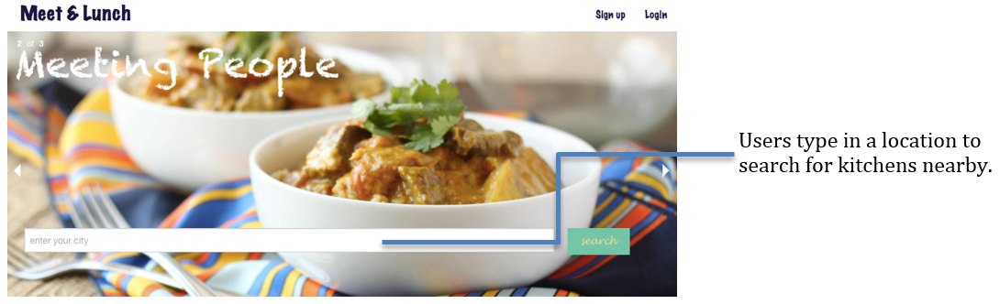
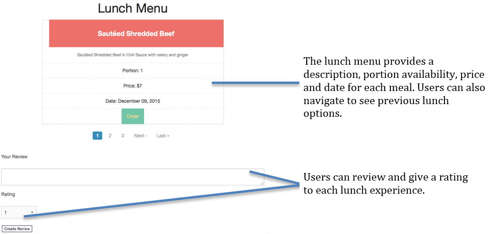
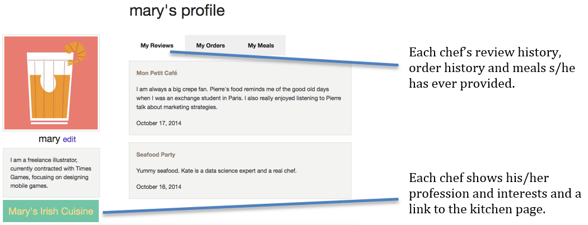

Problem Space
Networking plays an every important role in career. Many people work in a company-concentrated areas but lack of a opportunity to get to know others who work in same industry. Traditionally, people build networks through alumni network, Meetup, LinkedIn or friends. It is hard to build personal connections through these mediums. People want an easier way to meet other professionals and build connections.
User Research
I interviewed five target users about their work and life.Ideation
I interviewed five target users about their work and life. I learned that LinkedIn, Meetup and friends are the main medium for networking. Lunch sharing seems like a good idea.Current Social
I interviewed five target users about their work and life. I learned that LinkedIn, Meetup and friends are the main medium for networking. Lunch sharing seems like a good idea.
Landing Page
Both Chefs and Food-seekers can sign up or log in.
Food-seekers can search for nearby kitchens by location.

Kitchen Page
The kitchen page displays an info section with a short description, address and overall rating of the kitchen. The lunch menu displays meals. The review section shows the most recent reviews from Food-seekers.
The Chef of this kitchen is able to edit info on the page.

Profile Page
The profile page shows a short description of the user and a link to the kitchen page (if the user is a Chef). Since users can be both Chefs and Food-seekers, this page shows the review, order and meal histories of this user. The owner of the page can edit their profile photo and self-introduction on this page.
